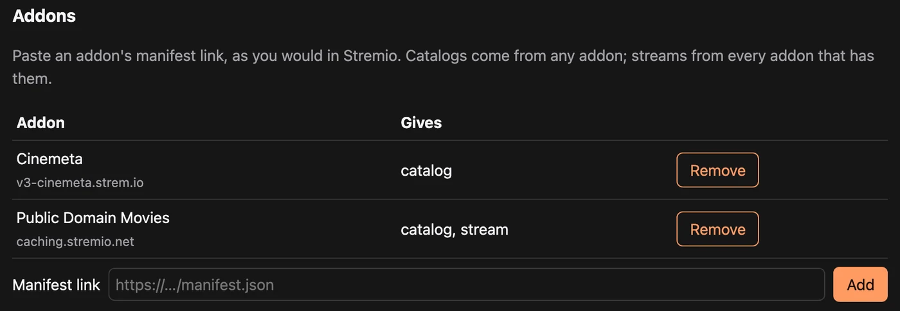
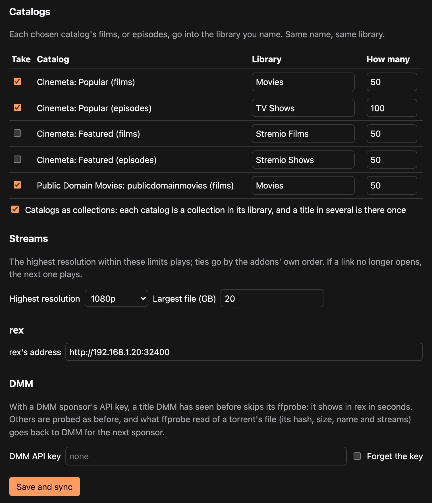

在 Stremio 中使用 rex 插件
rex-stremio 可以把 Stremio 插件的目录变成 rex 库。电影、剧集和直播频道随后就能在 Plex 应用里播放。不会下载任何内容。有人点击播放时，rex-stremio 会向流插件要一个链接，然后由 rex 播放。
使用它不需要 DMM 赞助。rex 和 rex-stremio 都是免费的。你需要自备能返回链接的流插件，通常是通过你自己的 debrid 账户。
你能得到的功能：
- 库。 电影会进入 Stremio Films，剧集进入 Stremio Shows，直播电视插件的频道进入名为 Live TV 的库，除非你为某个目录自己指定了库名。该库是一份频道列表，并不会出现在 Plex 应用的 Live TV 指南里。
- 合集。 给多个电影目录设置同一个库，并勾选 Catalogs as collections：一个库，每个目录对应一个合集，同时被多个目录收录的电影只会出现一次。
- Plex 显示它已知的信息。 电影和剧集会带着 IMDb id 交给 rex，因此 rex 接入 Plex 账户后，应用会显示常规的片名、海报和简介。只有插件才知道的片名，以及直播频道，会保留插件提供的名称和图片。
开始之前
第 1 步：安装 rex 并将其添加到 Plex 账户
- 第 1 步：安装 rex，包括找到 rex 的局域网 IP。之后每条命令都使用这个名称。
- 第 3 步：添加到 Plex 账户：在新账户上注册 rex，并将其分享给你自己的账户。
跳过这里的第 2 步和第 4 步：rex-stremio 就是你的应用。
直播频道，以及流媒体为 .m3u8 播放列表的插件，只能通过 rex 的视频转换来播放。对于这些内容，还需要在 rex 所在的机器上设置转换视频。以文件形式提供的电影和剧集（.mkv、.mp4）则不需要其他设置。
第 2 步：安装 rex-stremio
作用。 在 rex 所在的机器上把 rex-stremio 下载到 ~/rex-stremio，并将其作为服务启动。
sudo apt install -y git python3 ffmpeg
cd ~ && git clone https://github.com/debridmediamanager/rex-stremio
mkdir -p ~/.config/systemd/user
cp ~/rex-stremio/rex-stremio.service ~/.config/systemd/user/
systemctl --user daemon-reload && systemctl --user enable --now rex-stremio
journalctl --user -u rex-stremio -fbrew install ffmpeg
cd ~ && git clone https://github.com/debridmediamanager/rex-stremio
cd ~/rex-stremio && python3 rex_stremio.py只要该终端窗口保持打开，它就会一直运行。
你应该看到什么。 类似这样的一行输出：
... INFO relay and settings on http://127.0.0.1:9982/, 0 catalog(s), rex at http://127.0.0.1:32400rex-stremio 的设置页面，以及 rex 读取视频所用的地址，都位于 127.0.0.1:9982，因此只有本机能访问它们。
第 3 步：添加你的插件
打开 rex 所在机器上的浏览器，访问 http://127.0.0.1:9982/。没有屏幕？在你的电脑上运行 ssh -L 9982:127.0.0.1:9982 you@<rex's LAN IP>，然后在 SSH 保持连接的同时打开同一个地址。
-
在 Addons 下，粘贴 addon 的 manifest 链接（和在 Stremio 里一样），然后点击 Add。以下两类都要添加：
- Catalogs，例如 Cinemeta：
https://v3-cinemeta.strem.io/manifest.json。 - Streams：用来查找资源并通过你的 debrid 服务播放的 addon。打开它的配置页面，选择你的 debrid 服务，粘贴 API key，然后复制它生成的 manifest 链接。如果它提供仅缓存结果的选项，就选这个。该链接包含你的 debrid 密钥，请妥善保管，不要分享给别人。

- Catalogs，例如 Cinemeta：
- 在 Catalogs 下，勾选你想要的 catalog。为每个 catalog 指定它要放入的库，并设置 How many（要获取的电影、剧集或频道数量）。如果想要一个库，每个 catalog 对应一个合集，就让这些 catalog 使用同一个库，并勾选 Catalogs as collections。
- 在 Streams 下，设置你希望播放的 Highest resolution 和 Largest file，或者保持 any 不变。
- 在 rex 下，将地址设置为
http://<rex's LAN IP>:32400。 - 如果你赞助了 DMM，请在 DMM 下粘贴你的 DMM API key（赞助后 gatekeeper 会显示一次它）。对于 DMM 已有探测结果的种子，通过 debrid 播放时会跳过检查。其他情况都会检查。rex-stremio 对种子文件的检查结果（不包括普通 HTTP 流或 HLS 播放列表）会回传给 DMM，供下一位赞助者使用（在
config.json中设置share_probes: false可以停止回传）。然后点击 Save and sync。

**你应该看到的：**在 rex 的日志中，和 使用你自己的应用连接 rex 的第 4 步 一样：
INFO SOURCES PUT /rex/sources/stremio -> 200
INFO FEED stremio upsert: ...每个标题在检查完成后就会立即出现在 rex 中，而不是等整个 catalog 都检查完才显示。rex-stremio 会同时检查多个标题。它每六小时同步一次，并且每次保存后也会同步。
第 4 步：共享新的媒体库并开始观看
我们在页面结构中，链接目标保持不变。
刚由 rex-stremio 创建的库，你自己的账号暂时还看不到。请按照 第 3 步 把它们分享给你自己的账号，登录时使用这个新账号，同时也分享给其他需要使用 rex 的人。
然后用自己的 Plex 应用打开，播放任意一个内容。这时 rex-stremio 会向你的流媒体插件索取链接，rex 再进行播放。如果想在外出时观看，或者在 app.plex.tv 上观看，请为 rex 设置一个专属地址：在家以外使用。
在 Docker 中
rex-stremio 的 README 里有 Docker 命令。在容器里运行时，rex 会从容器在你网络中的地址读取视频，而不是 127.0.0.1，README 里有设置方法。
更新
cd ~/rex-stremio && git pull && systemctl --user restart rex-stremio在 macOS 上，用 Ctrl+C 停止它，在 ~/rex-stremio 里运行 git pull，然后再启动它。
它做不到的事
- 剧集按 Cinemeta 的编号方式编号。 对于少数剧集，这与 rex 遵循的 TMDB 编号不同，因此某一集可能会被放到错误的位置。
- 对于剧集目录，计数的是集数，而不是剧集条目数。
- 开启或关闭 Catalogs as collections 会把标题作为新内容重新发送给 rex，因此这些标题上的观看记录可能无法保留。开始观看前请先决定。
- 只列出电影、剧集和频道目录，不包括需要先搜索或先选择类型才能使用的目录。
- 直播频道不能回退到较早的位置、不能稍后继续播放，也不能标记为已观看，并且只能在会请求 rex 进行转换的应用中播放（Plex 系列应用和 Plezy；Plex Web 未经测试）。没有可用流或带有 DRM 的频道会被排除在外。
- 任何能访问 rex-stremio 地址的人都可以通过它播放。 除非 rex 运行在其他位置，否则请保持为
127.0.0.1。
README 列出了其余限制，以及 config.json 中的每个设置。若要构建你自己的插件，请参阅 构建 rex 插件，其中也解释了 rex-stremio 的内部工作原理。